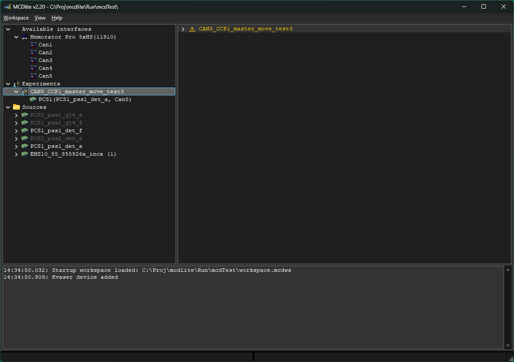
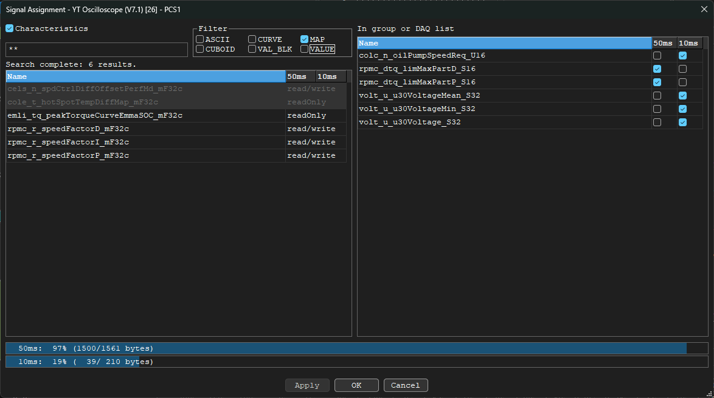
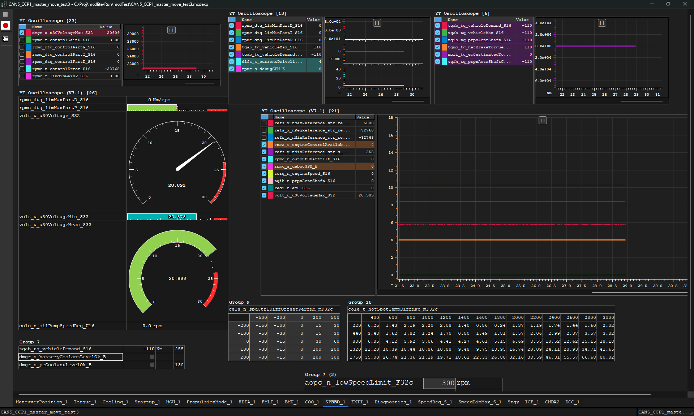
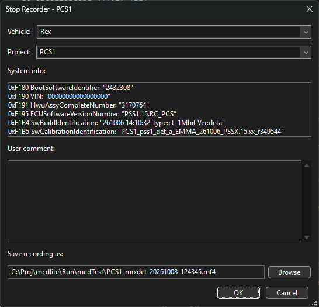

Workspaces and experiments
A workspace is a folder containing workspace.mcdws, its experiment files, and references to signal sources. Choose Workspace > Open and select the folder. If it does not contain a workspace file yet, MCDlite can create one.
- Add signal sources with Workspace > Add Source. Select one DBC file, or select a matching A2L and S19 file together.
- Choose Workspace > New Experiment to create a blank
.mcdexpfile, or Add Experiment to add an existing one. Use Import Experiment for an INCA export. - Save workspace changes with Workspace > Save Workspace or
Ctrl+S. - In the workspace tree, double-click an experiment to start it. You can also right-click it and choose Start Experiment.

Find and assign signals
- Open Signal Assignment from the experiment toolbar or press
Insert. - Enter part of a name. Search runs as you type; press
Enterto search immediately. Partial matches are included automatically. Use*for any number of characters or?for one character. - Measurements are shown by default. Check Characteristics to include characteristics too. With no type boxes checked, both measurements and all characteristic types are shown. Checking one or more type boxes filters to those characteristic types and omits measurements.
- Select the result rows to add and choose Apply. New measurements go to the first DAQ list by default; use the DAQ-list checkboxes in the right-hand table to change an assignment.
The results table shows up to 1,000 matches. Refine the name or wildcard pattern when the result limit is reached. A dimmed result is already in another group or layer.
Use the DAQ usage bars at the bottom of the dialog to check list capacity. Characteristics are added to the group rather than assigned to a DAQ list.

Display measurements
Right-click a numeric measurement and choose Display Style to switch between Numeric, Bar, Dial, and Arc. Boolean and enumeration signals do not use these numeric display styles.
For Bar, Dial, or Arc, choose Display Range to set minimum and maximum values and a warning threshold. Dial and Arc also let you set major and minor sectors. Choose Use Signal Limits to restore the limits from the signal definition.
Use the context menu's colour option to change the Bar or Arc colour. When a value crosses its warning threshold, the warning indication flashes.

Record data
- Start the experiment and confirm its target is connected.
- Choose Record on the experiment toolbar or press
F8. - Choose Stop or press
F9to finish. Enter the Vehicle, Project, and User comment, then choose where to save the MDF4 recording (.mf4).
Vehicle, Project, comment, and save path are required. The comment accepts ASCII characters only. Vehicle and Project values are remembered in the workspace for later recordings.

Keyboard shortcuts
Ctrl+S- Save the workspace.
Insert- Open Signal Assignment in the experiment.
F8- Start recording.
F9- Stop recording and enter save details.
Video walkthroughs
Walkthrough recordings are hosted separately from the installer. Links for this version will appear here when available.